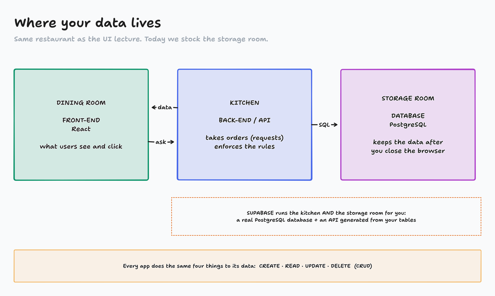
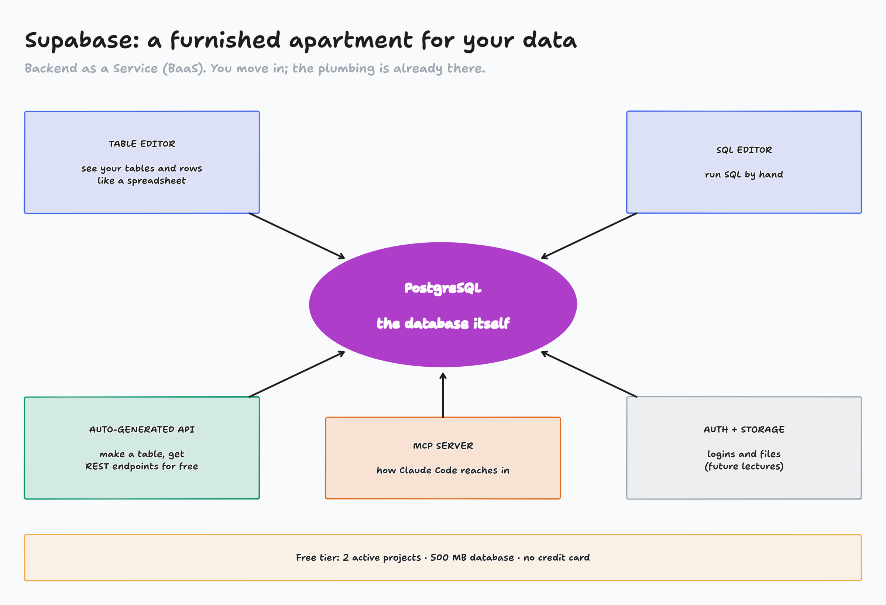
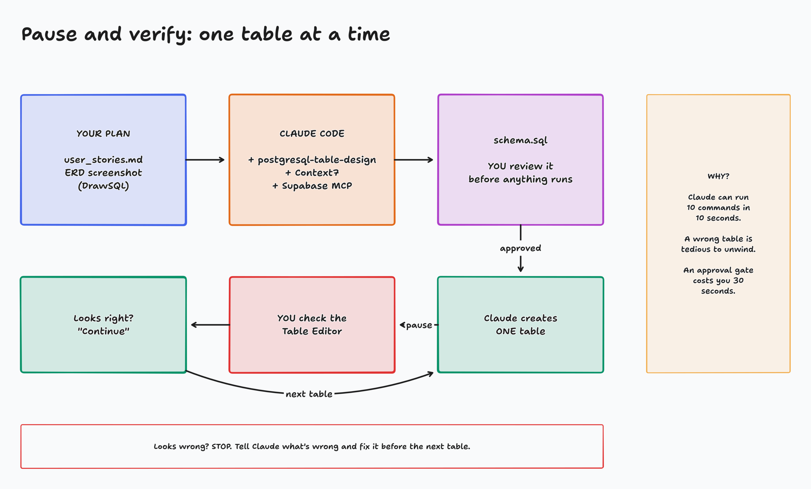
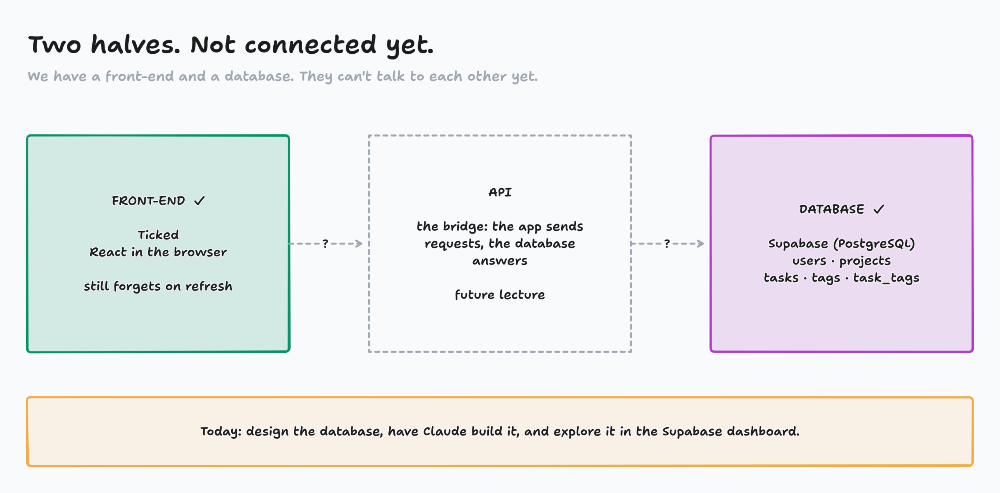

Databases on the cloud: Supabase + Claude Code
Last lecture you drew the database. Now Claude builds it in the cloud, and you check every step.
Today
- What PostgreSQL and Supabase are, and why Supabase
- Create a Supabase project and tour the dashboard, live
- Connect Claude Code to it with the Supabase MCP
- Hand Claude the stories and the diagram, and build the tables one at a time
- Explore the finished database in the Supabase dashboard



Why Supabase?
The dashboard
See your tables and rows like a spreadsheet. Check Claude's work without writing SQL.
Auto-generated API
Create a table, get endpoints to read and write it. Your React app can use them right away.
Auth built in
Email, magic links, Google, GitHub. Weeks of work, already done.
An MCP server
Supabase maintains one for Claude Code. That's how Claude reaches your database.
Free tier
2 active projects, 500 MB, no credit card.
Plain PostgreSQL
Not a toy. The same engine big companies run.
Live: create a Supabase project
| Field | What to do |
|---|---|
| Organization | Yours. First sign-in? Create one: your name, Personal, Free |
| GitHub (optional) | Leave it empty |
| Project name | task-manager |
| Database password | Generate a password → Copy → save it now. It's never shown again |
| Region | The one closest to you (Americas) |
| Enable Data API | ✓ keep on: the auto-generated API (future lecture) |
| Automatically expose new tables | ✓ keep on |
| Enable automatic RLS | ✓ turn this ON |
| Advanced configuration | Leave it → Create new project (60–90 seconds) |
The dashboard: where you check Claude's work
Table Editor
Every table and row, like a spreadsheet. You'll live here today.
SQL Editor
Type SQL and run it yourself.
Database
The Schema Visualizer draws your tables and keys, like DrawSQL.
Authentication
Users and logins. Future lecture.
Storage
Files and images. Future lecture.
Connect
The button in the top bar. It gives us the MCP command.
Live: connect Claude Code with the Supabase MCP
mkdir -p ~/demos/ticked/supabase && cd ~/demos/ticked/supabase # ticked/front-end = the React app · ticked/supabase = the database's context # Supabase → Connect → MCP → Claude Code → copy the command. It looks like: claude mcp add --scope project --transport http supabase \ "https://mcp.supabase.com/mcp?project_ref=<your-ref>&features=..." claude # trust the folder → "Use this MCP server" /mcp # supabase → Authenticate → browser → back
Live: add the database design skill
# in the same folder, in a terminal (not inside Claude) curl -fsSL https://kabeier.github.io/Databases-and-Supabase/demo-kit/setup-db-skill.sh | bash # then inside Claude /skills
postgresql-table-design
A rulebook for good PostgreSQL tables: types, keys, constraints, indexes. It covers things we haven't had time for.
Don't come empty-handed: give Claude everything up front
user_stories.md
The intent. "A task can have several tags" tells Claude why task_tags exists.
The diagram
Your DrawSQL screenshot. Claude reads images: every table, column and line.
schema.sql
Claude writes it from your diagram. You review it before anything runs.
cp ~/db-kit/user_stories.md ~/db-kit/task-manager-erd.png .
The prompt
I'm building a task management application where people create projects and tasks, and label tasks with tags. There's no login screen yet; that comes later. I have some resources I'd like you to look at and supervise: Here is my DrawSQL schema diagram (a screenshot): @task-manager-erd.png Here are my user stories: @user_stories.md My Supabase project is already connected in this directory through the supabase MCP. Please: 1. Use the `postgresql-table-design` skill and the Context7 MCP to update your context on the documentation for Supabase and PostgreSQL. 2. Write the SQL schema for my diagram into `schema.sql`. Confirm it matches the diagram and the user stories, and list anything you'd change (including Row Level Security). Don't change my design on your own. Then stop. 3. After I approve, create the tables in my Supabase project ONE AT A TIME. 4. After each table, pause and tell me what you did so I can verify it in the dashboard. Is there any additional information you may need from me?
Activity: Approve or push back?
- I paste the prompt. Claude starts reading docs.
- Meanwhile: things Claude might say while building a database
- In chat on "go": APPROVE or PUSH BACK
- Then we look at what our Claude actually wrote
Page: activity-approve-or-push-back/

Live: review, build, verify
1 · Review schema.sql
- Five tables, matching the diagram?
- Types: UUID ids, BOOLEAN, DATE, TIMESTAMPTZ?
- Every line on the diagram is a foreign key?
- Which suggestions do you accept?
2 · After each table
- Table Editor: does the table exist?
- Column names and types match?
- Foreign keys point the right way?
- Good? Type "continue"
At the end: Database → Schema Visualizer should look like your DrawSQL diagram.
Live: explore your database in Supabase
Table Editor
- Insert a user, then a project and a task: pick their
user_idandproject_idfrom the list - Add a tag, then a
task_tagsrow joining them - Break it: a
task_tagsrow pointing at no task - Delete the project: the task stays, project empty
-- SQL Editor: every task with its project
select t.title, p.name as project
from tasks t
left join projects p
on p.id = t.project_id;
Then: Database → Schema Visualizer

Delegate the typing, not the responsibility
- Connect Claude to a development project, never production
- Approve each Supabase tool call. Read it first.
- Only looking? Add
&read_only=trueto the MCP URL - The secret (
service_role) key never goes in front-end code - Keep Row Level Security on. Its rules come in future lectures.
Package it: a sub-agent
# .claude/agents/supabase-agent.md
name: supabase-agent
mcpServers: [supabase, context7]
skills: [postgresql-table-design]
Checks the project first, never runs destructive changes without your OK, documents every change.
We have a database. Ticked can't use it yet.
The front-end and the database talk through an API. We connect them in a future lecture, and then every click becomes a row in PostgreSQL.
Homework, Part II
- Priority 1, Netflix Clone II: build its schema on Supabase. A users table is fine; no login yet.
- Priority 2, your own app: put your database on Supabase. New project, Supabase MCP, the skill, your stories and diagram, one table at a time.
- Priority 3, FreeCodeCamp: 100 steps of the JavaScript certification
Setup steps
- All commands are on the class site
- One folder per database
- Free tier: 2 projects, one per app
- Screenshot your Schema Visualizer when done